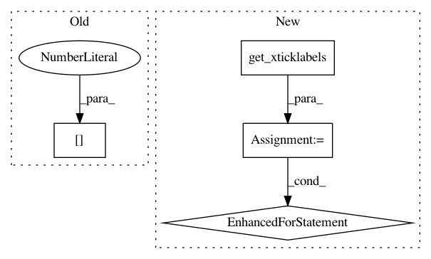

73bf812cc5598a0e6efb20d11de6568a80125a21,misc/stability/brgrid.py,,BRGrid,#Any#Any#Any#Any#Any#,11
Before Change
lw=1, color="w", alpha=0.25)
"""
ax[0].set_ylabel(r"$\log\,b$", fontsize=14)
return im1, im2
After Change
axis.set_ylim(np.log10(bmin), np.log10(bmax))
axis.set_ylabel(r"$\log\,b$", fontsize=10)
axis.get_yaxis().set_label_coords(-0.175, 0.5)
for tick in axis.get_xticklabels() + axis.get_yticklabels():
tick.set_fontsize(6)
return im1, im2
def RMinusOneRPlusOne(ax, l, m, res=1, eps=1, aspect="auto"):
In pattern: SUPERPATTERN
Frequency: 3
Non-data size: 4
Instances
Project Name: rodluger/starry
Commit Name: 73bf812cc5598a0e6efb20d11de6568a80125a21
Time: 2018-04-29
Author: rodluger@gmail.com
File Name: misc/stability/brgrid.py
Class Name:
Method Name: BRGrid
Project Name: rodluger/starry
Commit Name: 73bf812cc5598a0e6efb20d11de6568a80125a21
Time: 2018-04-29
Author: rodluger@gmail.com
File Name: misc/stability/brgrid.py
Class Name:
Method Name: RMinusOneRPlusOne
Project Name: scikit-learn-contrib/categorical-encoding
Commit Name: 39811c9f52de2780e5f06e6621f8c2c8a934a9b1
Time: 2016-01-10
Author: will@predikto.com
File Name: encoding_examples.py
Class Name:
Method Name: main